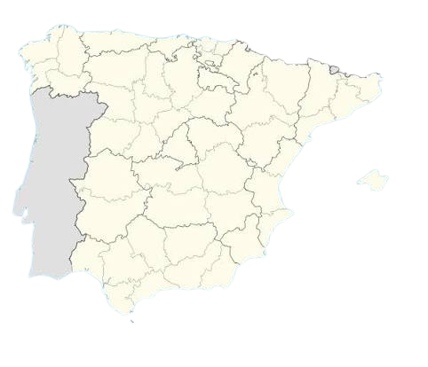
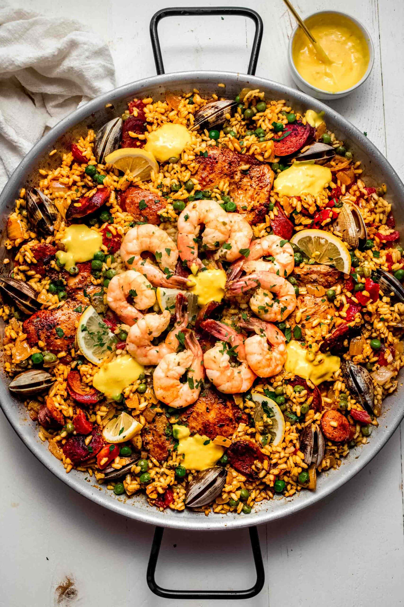
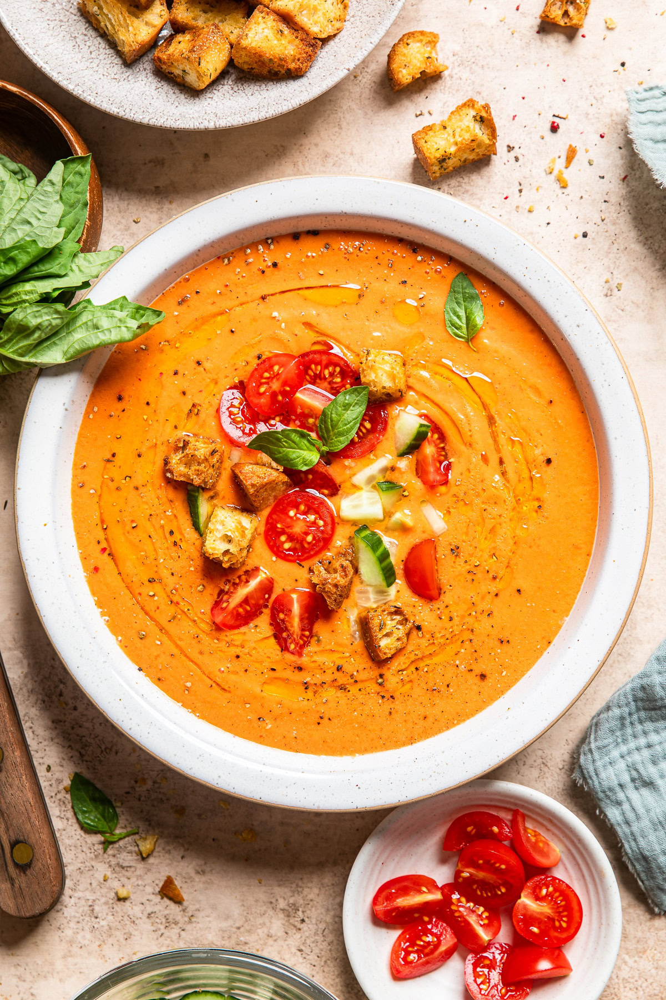
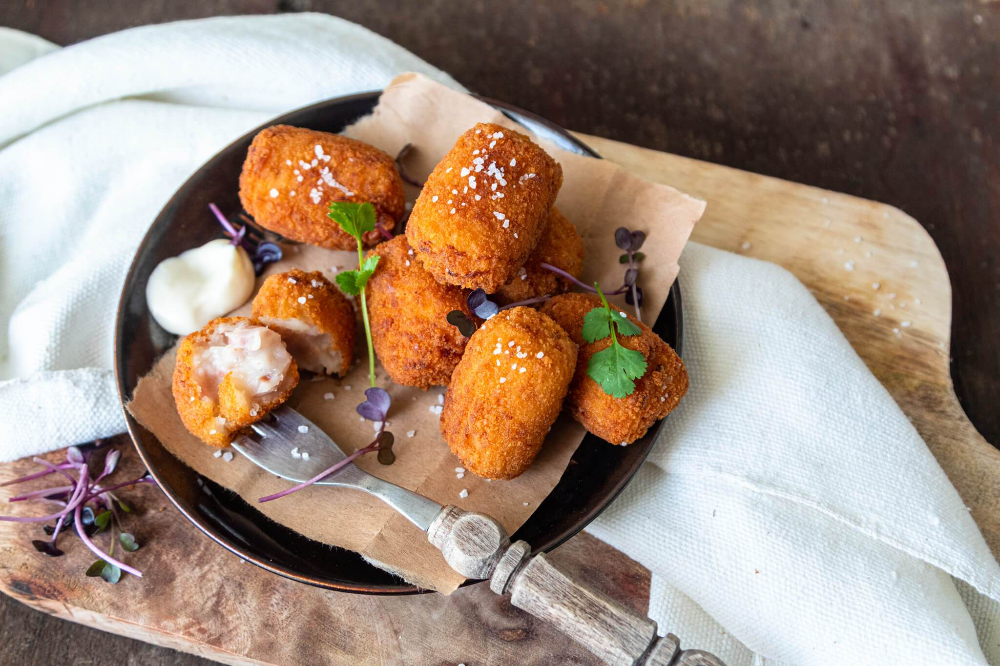
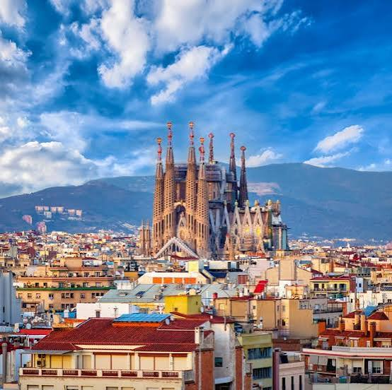
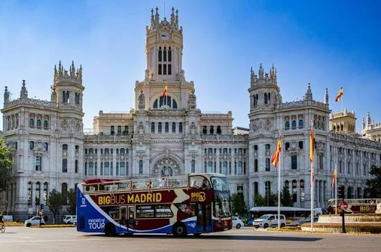
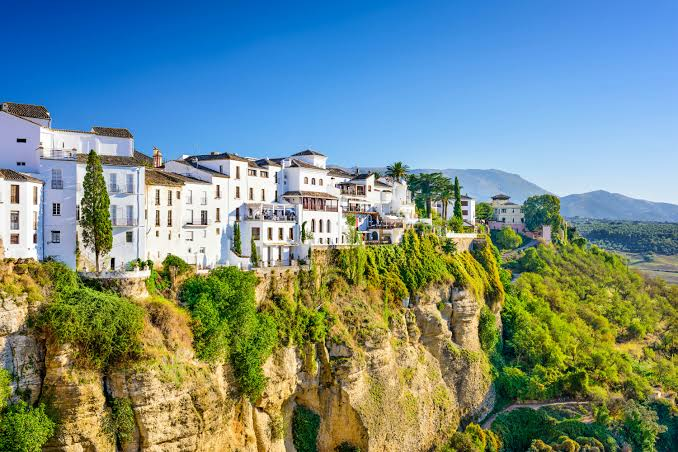

- CountrySpain
- CapitalMadrid
- LanguageSpanish
- CurrencyEuro
"El que a buen árbol se arrima, buena sombra le cobija."

"El que a buen árbol se arrima, buena sombra le cobija."

Rice cooked in a wide pan with saffron, vegetables, and meats like chicken, rabbit, or seafood.

: A cold, refreshing soup from Andalusia made from blended ripe tomatoes, cucumbers, peppers, and olive oil.

Small fried croquettes filled with seafood or meat, often served as an appetizer.

Home to Gaudí's Sagrada Família, this Catalan port city mixes Gothic alleys with modernist buildings

The EU's highest capital, home to the Prado Museum, Retiro Park, and a famous late-night tapas scene

The birthplace of flamenco, where Moorish landmarks like the Alhambra and Córdoba's Mezquita still stand.